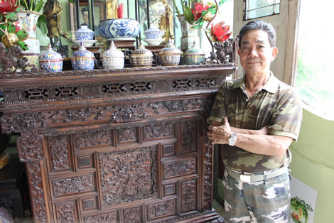

Cách bảo quản đồ gỗ cổ và đồ gỗ khảm ốc xà cừ
Những ai mới chơi đồ gỗ thì chắc hẳn đều nơm nớp lo sợ vì sự co dãn của gỗ , cũng như sự co rút của chất keo gắn ốc xà cừ vào gỗ . Không chỉ đồ gỗ mới , mà đồ gỗ cũ vẫn có sự co dãn
Đồ gỗ cổ, đồ gỗ mới, đồ khảm ốc, khảm trai sẽ luôn có sự co dãn vào các mùa trong năm. Những ai mới chơi đồ gỗ thì chắc hẳn đều nơm nớp lo sợ vì sự co dãn của gỗ , cũng như sự co rút của chất keo gắn ốc xà cừ vào gỗ . Không chỉ đồ gỗ mới , mà đồ gỗ cũ vẫn có sự co dãn, vì trong thân gỗ luôn có một lượng lớn tinh dầu và hơi nước vì thế khi gặp sự thay đổi thời tiết đột ngột , gỗ sẽ không kịp biến thiên lên sự co ngót sẽ xảy ra . Ở bài viết này mình sẽ chia sẻ các bạn những cách để hạn chế sự co ngót do tác động của thời tiết này .

Nhóm 1 : Đồ gỗ cổ hay gỗ đã khai thác được vài năm
Đối với nhóm 1 này thì lượng hơi nước , tinh dầu của thân gỗ đã giảm đi một lượng đáng kể nên chúng ta chỉ cần:
- Để ở nơi mát mẻ , tránh ánh nắng trực tiếp : vì nắng trực tiếp có thể làm gỗ nóng lên ,cong vênh , và co ngót rất nhanh do lượng hơi nước trong thân gỗ bốc ra đột ngột .
- Hạn chế lau nước : Vì đối với đồ gỗ cổ , ten gỗ rất quan trọng , việc lau nước có thể làm bạc chất gỗ và mất ten gỗ . Và lau nước nhiều làm lượng hơi nước trong gỗ không ổn định .
- Hạn chế để phòng máy lạnh : Nếu để phòng máy lạnh thì nên quét mặt dưới ( dưới gầm ) của món đồ để giữ độ ẩm ổn định ( khoảng nửa ngày cho đến 1 ngày là bay hết mùi nhớt )
- Không được dùng hóa chất : đồ gỗ cổ và cả gỗ khai thác được vài năm mà có cẩn ốc xà cừ lên thì ta không được dùng hóa chất lau lên bề mặt , vì hóa chất sẽ làm mất ten gỗ và ảnh hưởng đến chất keo gắn ốc xà cừ vào gỗ . Các loại hóa chất như : nước rửa kính ,nước rửa chén bát , xăng nhật , nước rửa móng tay ,….
Nhóm 2 : Đồ gỗ mới sản xuất , mới khai thác
Đối với nhóm 1 này thì lượng hơi nước , tinh dầu của thân gỗ đã giảm đi một lượng đáng kể nên chúng ta chỉ cần:
- Hạn chế tối đa tác độg của nhiệt độ bên ngoài vì khoảng thời gian này gỗ sẽ rất dễ bị co ngót do lượng nước trog gỗ rất cao .
- Quét nhớt hoặc phun 1 lớp PU lót ở mặt trong hoặc dưới gầm để giữ độ ẩm cho gỗ (đối với đồ cổ thì tuyệt đối không được phun gì cả).
- Phải khóa 2 đầu những tấm gỗ lớn để chánh tình trạng gỗ bị tóc đầu hay xé ra .
- Gỗ mới thì phải để một thời gian mới được khảm ốc lên .
Của bền tại người , các cụ ngày xưa đã nói như thế và tới giờ cũng vậy , hãy trân trọng và gìn giữ những quý vật mà ông cha ta để lại . Mong rằng những chia sẻ của mình có thể giúp một phần nào đó các bạn bảo quản đồ gỗ được trước những thay đổi của thời tiết.